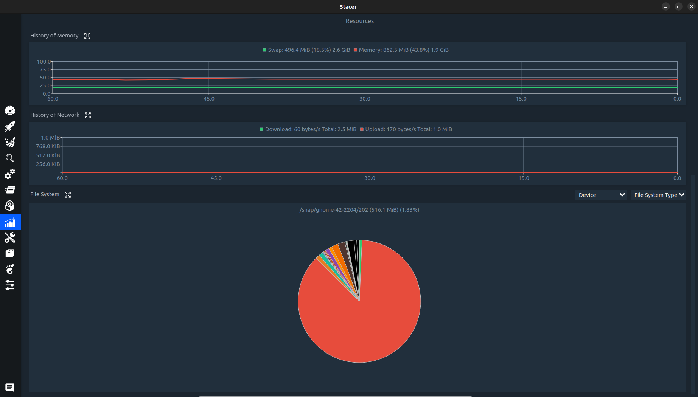

Instalación de Stacer
Ejecuta en terminal:
sudo apt install stacer
O instala la última versión desde GitHub:
wget https://github.com/oguzhaninan/Stacer/releases/download/v1.2.0/stacer_1.2.0_amd64.deb
sudo dpkg -i stacer_*.deb
Uso de Stacer
1. Panel de Resumen (Dashboard)
Muestra información en tiempo real sobre:
- Uso de CPU y temperatura
- Consumo de RAM y swap
- Espacio en disco
- Actividad de red
2. Limpieza del Sistema (System Cleaner)
Elimina:
- Archivos temporales
- Caché de aplicaciones
- Paquetes obsoletos
- Registros (logs)
3. Monitorización (Resources)
Gráficos detallados de:
- Uso de CPU por núcleo
- Historial de consumo de RAM
- Actividad de disco
- Tráfico de red
4. Gestión de Procesos
Puedes:
- Ver todos los procesos activos
- Ordenar por uso de CPU/RAM
- Finalizar procesos
5. Gestión de Servicios
Controla servicios del sistema:
- Iniciar/detener servicios
- Habilitar/deshabilitar al inicio
6. Gestión de Repositorios APT
Administra repositorios de software:
- Añadir nuevos repositorios
- Eliminar o desactivar repositorios
Funciones no disponibles o limitadas en Ubuntu 22.04 LTS
Estas características pueden faltar o no funcionar correctamente:
- Gestión de usuarios: No aparece en algunas versiones de Stacer.
- Aplicaciones de inicio: Puede mostrar la lista vacía (no detecta apps Snap/Flatpak).
Soluciones alternativas:
- Para gestión de usuarios: Usa
sudo adduser nombre_usuarioo la configuración del sistema - Para apps de inicio: Ejecuta
gnome-session-properties
Conclusión: ¿Recomendar Stacer en Ubuntu 22.04?
Ventajas:
- Interfaz intuitiva para monitorización básica
- Excelente herramienta de limpieza del sistema
- Útil para gestionar procesos y servicios
- Integración con repositorios APT
Desventajas (en Ubuntu 22.04 LTS):
- Falta gestión de usuarios en algunas versiones
- Problemas con aplicaciones de inicio
- No detecta apps Snap/Flatpak en algunas funciones
- Puede consumir más recursos que herramientas de terminal
Recomendación final:
Stacer es recomendable para usuarios intermedios que necesitan una herramienta gráfica para tareas básicas de monitorización y limpieza. Sin embargo, para funciones avanzadas o en Ubuntu 22.04, es mejor complementarlo con herramientas nativas o comandos de terminal.